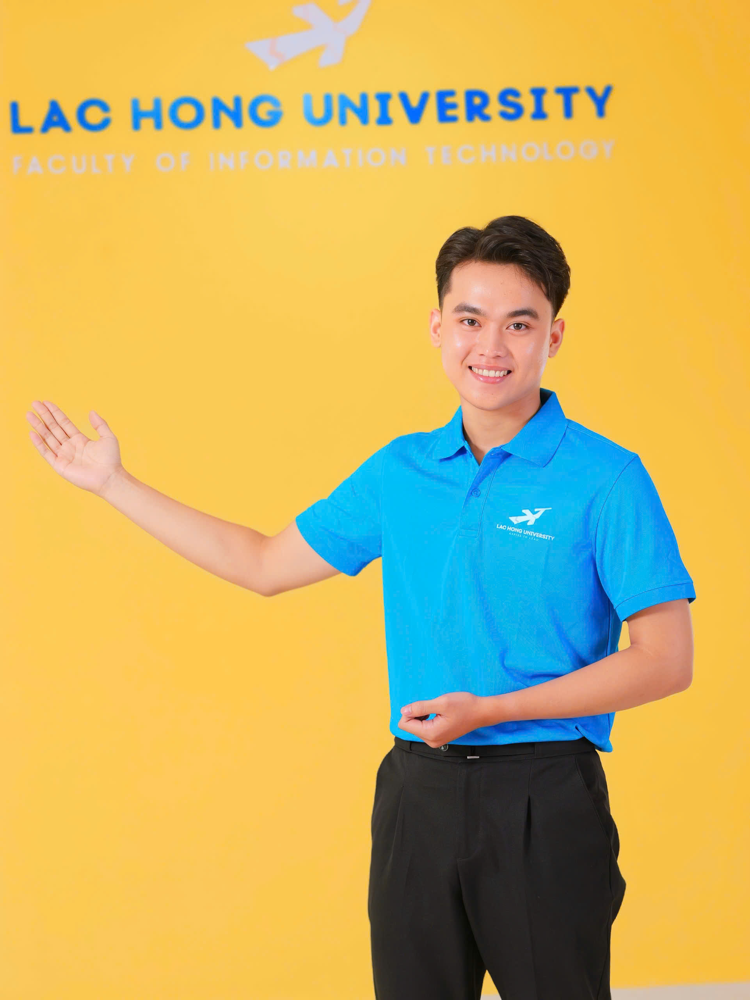
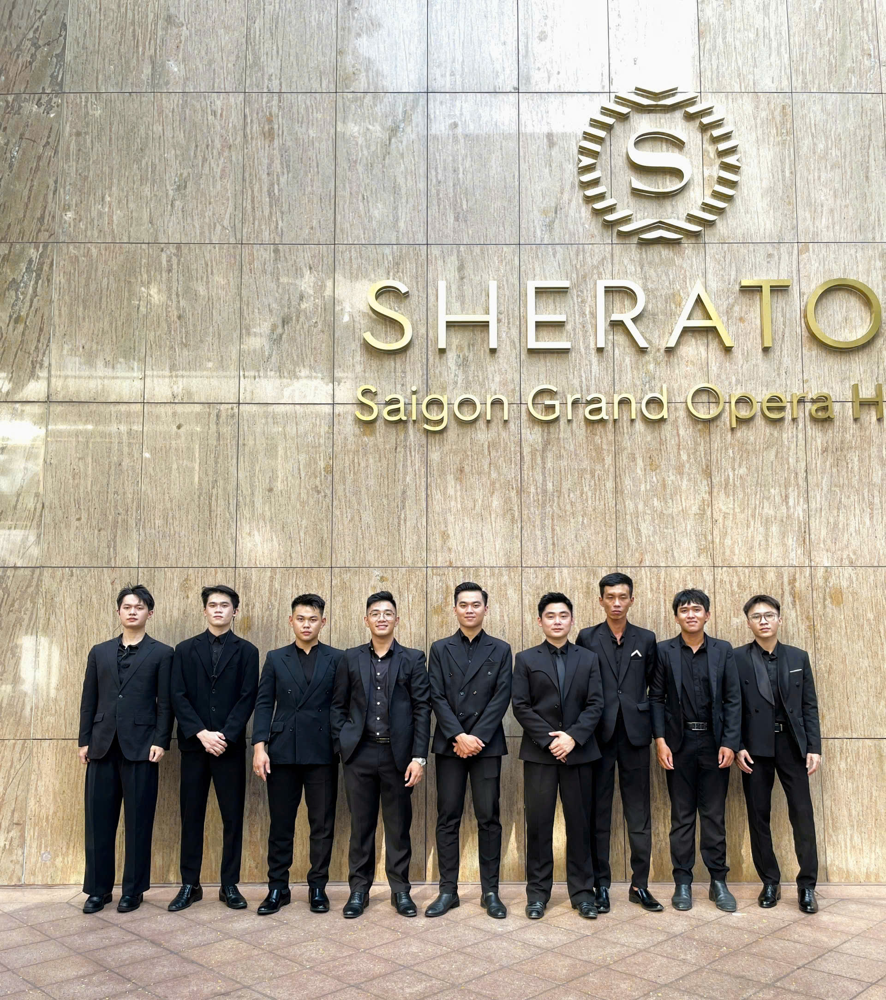
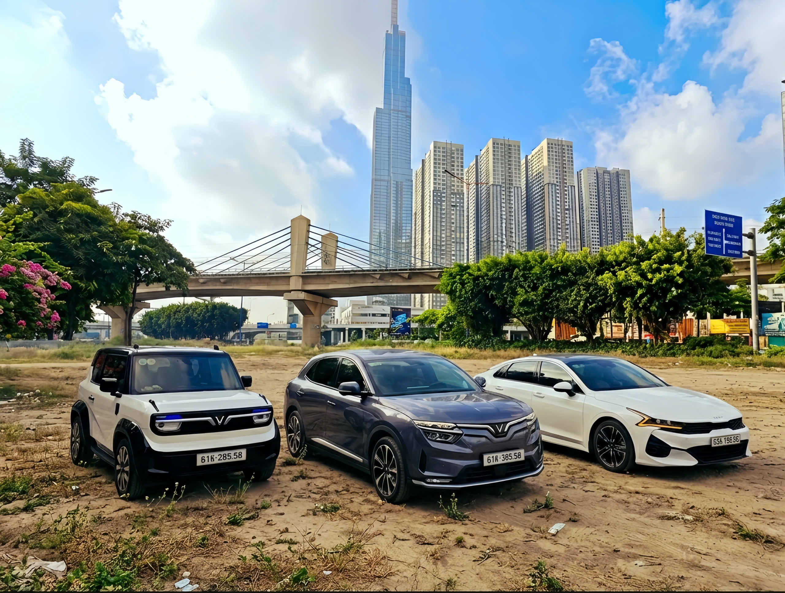
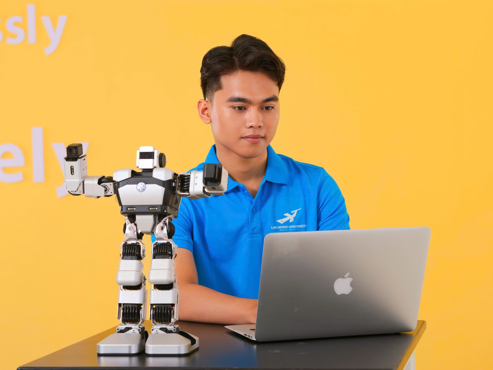
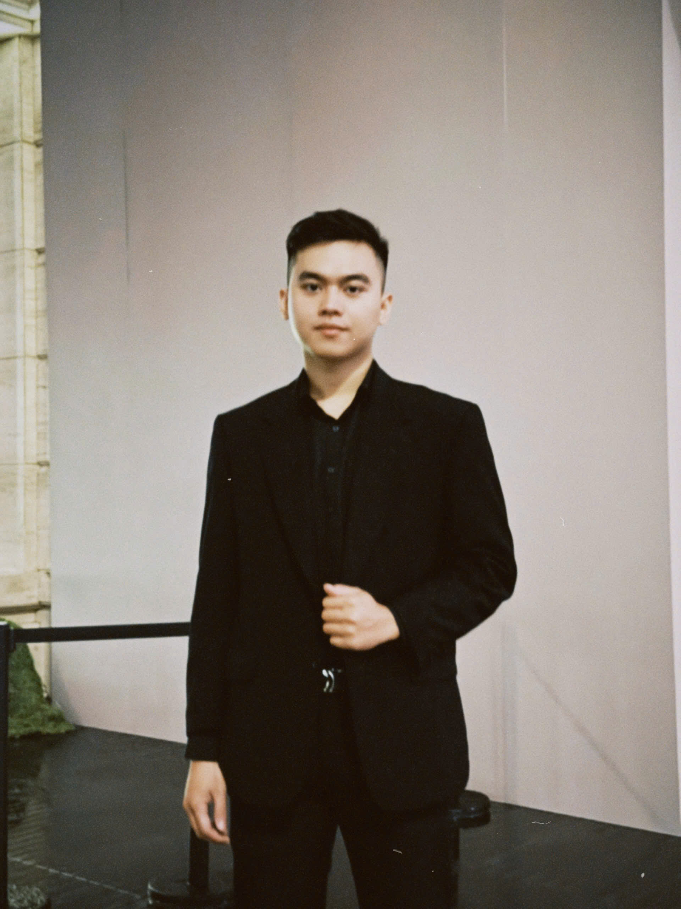
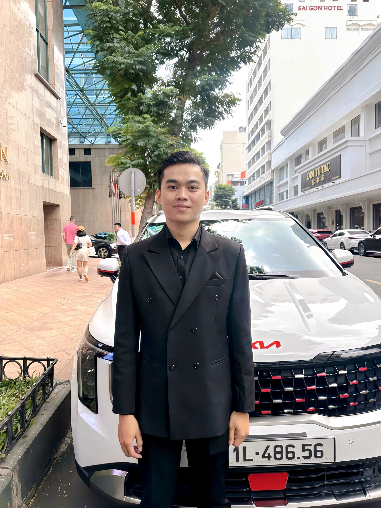

Tôi là một người trẻ cầu thị, không ngừng lăn xả để chuyển hóa nền tảng Thương mại Điện tử thành kinh nghiệm thực chiến. Tôi tin rằng mọi điểm chạm với khách hàng, từ online đến offline, đều cần sự tinh tế, tư duy hệ thống và thái độ phục vụ chuyên nghiệp.

4 Năm Va Đập
Thực chiến & Cọ xát trường đời
Service Quality
Kiểm soát chất lượng điểm chạm
O2O Closed-Loop
Luồng vận hành khép kín
Ba trụ cột năng lực được rèn giũa qua thực chiến tại các môi trường yêu cầu chuẩn mực cao.

Tham gia ban điều phối vận hành và hậu cần (Logistics) tại các sự kiện cấp cao của Rolex, Audemars Piguet và Gucci. Chịu trách nhiệm kiểm soát rủi ro an ninh tài sản, thiết lập luồng di chuyển VVIP và giám sát chất lượng điểm chạm theo đúng chuẩn mực khắt khe của thương hiệu toàn cầu. Năng lực cốt lõi là giải quyết sự cố hiện trường linh hoạt, khả năng chịu áp lực cao và tuân thủ tuyệt đối quy chuẩn bảo mật thông tin doanh nghiệp.

Trực tiếp vận hành mô hình kinh doanh cho thuê phương tiện tự lái (3 phương tiện). Kiểm soát luồng khách hàng (Customer Journey) từ giai đoạn tiếp cận trên mạng xã hội (TikTok, Facebook), tư vấn qua Zalo, cho đến thủ tục bàn giao offline. Tối ưu hóa quy trình vận hành bằng cách chuẩn hóa bộ tiêu chuẩn giao nhận (SOP), quản lý rủi ro tài sản và liên tục nâng cấp tiện ích công nghệ dựa trên phản hồi người dùng, đảm bảo tỷ lệ hài lòng (CSAT) tối đa.

Trực tiếp tham gia triển khai và quản trị ngân sách tiếp thị số quy mô lớn (lên tới 9 chữ số/tháng) cho chuỗi dịch vụ làm đẹp. Ứng dụng tư duy Data-driven để phân tích dữ liệu nhân khẩu học, đo lường chỉ số giữ chân (Retention Rate) và tối ưu hóa hiệu suất nội dung (Hook 3s). Quản lý luồng tương tác đa kênh nhằm trích xuất Insight khách hàng, từ đó tinh chỉnh kịch bản (Chatflow) để tối đa hóa tỷ lệ chuyển đổi.
Mỗi mốc thời gian là một bước đệm quan trọng trong hành trình phát triển năng lực và tư duy chuyên nghiệp.
Đảm nhiệm vai trò Trợ lý Cá nhân VVIP (1 tháng), rèn luyện tư duy kỷ luật và bảo mật thông tin. Tham gia quản lý vòng ngoài và điều phối Valet Parking tại sự kiện khai trương Audemars Piguet & Gucci.


Điều phối Logistics sự kiện Gucci & Louis Vuitton; hỗ trợ lộ trình di chuyển cho TGĐ Gucci Châu Á - Thái Bình Dương. Điều phối an ninh và lịch trình City Tour cho nghệ sĩ hạng A Thái Lan. Tham gia VOBF 2025 (ĐH Quốc tế Hồng Bàng).
Tự lực quản lý vận hành dự án cho thuê xe tự lái (3 phương tiện). Đạt danh hiệu Top 5 Nam & Giải Trang phục Dạ hội xuất sắc nhất (Nét đẹp Sinh viên Lạc Hồng).
Năng nổ trong vai trò Ủy viên Ban chấp hành Khoa CNTT. Tổ chức và tham gia chiến dịch tình nguyện Xuân Yêu Thương.
Hãy kết nối với tôi để cùng thảo luận về các cơ hội hợp tác và phát triển dự án Thương mại điện tử.